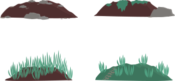

Cailloux
Invasive
Prairie
Non invasive
jardin
Non invasive
Forêt
Non invasive
Nous avons vu les différentes espèces de fleurs qui poussent sur différents types de sol.
Le nombre de pâquerettes augmente ou diminue selon les endroits et les années.
Les pâquerettes invasives gagnent du terrain.
Ces pâquerettes invasives poussent là où il y a des cailloux.
C’est un exemple d’évolution de la Biodiversité.
Les Hommes en construisant des murs, des routes, des trottoirs, construisant des maisons parfaites
pour les pâquerettes invasives.
Celles-ci mangent l’habitat de toutes les plantes alentours.
Bravo ! Tu es arrivé à la fin de cet
atelier sur la Biodiversité.
Pour recommencer l’expérience,
retournes au menu.